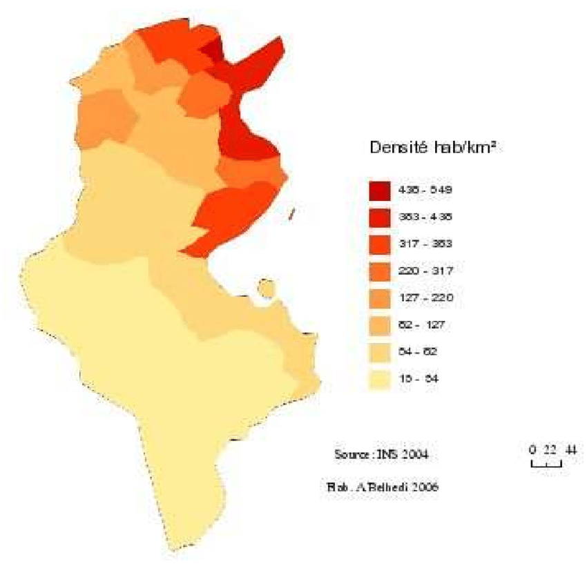
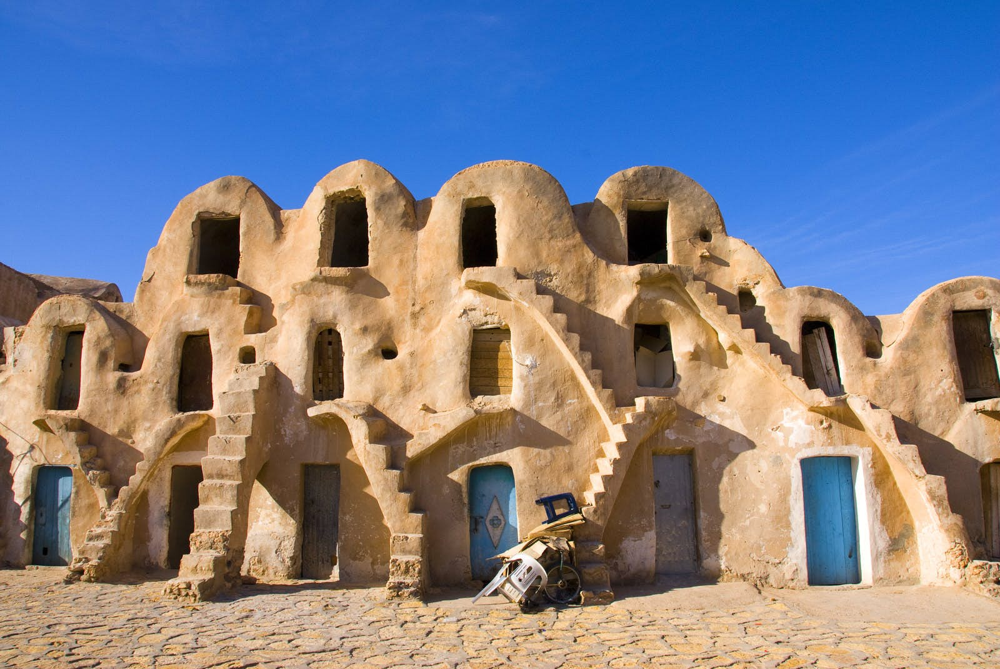

.png)
La culture de la Tunisie se diversifie par un héritage de quelque 3 000 ans d'histoire et une position géographique en plein bassin méditerranéen, berceau des civilisations les plus prestigieuses et des principales religions monothéistes. La Tunisie a en effet été un carrefour de civilisations et sa culture reflète les traces des cultures punique, arabe, turque, africaine, européenne et musulmane ainsi que l'influence des dynasties successives qui ont régné sur le pays.
Tunis est la capitale de la Tunisie, un pays situé en Afrique du Nord. Elle est également la plus grande ville du pays. Tunis est située sur la côte nord-est de la Tunisie, le long du golfe de Tunis, qui fait partie de la mer Méditerranée. La ville a une riche histoire qui remonte à l'Antiquité, avec des influences culturelles et architecturales diverses, notamment des éléments carthaginois, romains, arabes, ottomans et français.
La Tunisie est l'État du Maghreb le plus homogène sur le plan linguistique255 car la quasi-totalité de la population parle l'arabe tunisien, ou darija, et comprend l'arabe littéral, qui est la langue officielle du pays1, ainsi que le français. La darija tunisienne est considérée comme un dialecte dérivé de l'arabe classique — ou plus exactement un ensemble de dialectes256 — pour lesquels il n'existe aucun organisme officiel de normalisation257 et qui est surtout parlé dans le cadre d'un dialogue quotidien au sein de la famille. Selon des études linguistiques, il serait proche du maltais258, qui n'est toutefois pas considéré comme un dialecte arabe pour des raisons sociolinguistiques. Le berbère est parlé par une minorité berbérophone, surtout dans le Sud du pays.
La monnaie officielle de la Tunisie est le dinar tunisien, abrégé TND. Le dinar tunisien est divisé en 1 000 millimes. Les billets de banque et les pièces de monnaie en dinars tunisiens sont émis par la Banque centrale de Tunisie.
La population tunisienne s'élève à 11,8 millions d'habitants à fin janvier 2023. D'après les dernières estimations de l'Institut National de la Statistique (INS), la Tunisie comptait une population de 11,85 millions d'habitants au mois de janvier 2023.
Kaïs Saïed, né le 22 février 1958 à Tunis, est un homme d'État tunisien, président de la République depuis le 23 octobre 2019. Universitaire spécialisé en droit constitutionnel et juriste de profession, il est président de l'Association tunisienne de droit constitutionnel de 1995 à 2019. Candidat indépendant à l'élection présidentielle de 2019, bénéficiant d'une image de probité, il est élu au second tour avec 72,7 % des suffrages exprimés, face à l'homme d'affaires Nabil Karoui.
Une Assemblée constituante rédige une Constitution proclamée le 1er juin 1959, trois ans après l'indépendance. Elle subit plusieurs amendements dont celui du 12 juillet 1988 pour limiter le nombre de mandats présidentiels à trois et celui du 1er juin 2002 à la suite du référendum constitutionnel tenu le 26 mai de la même année, permettant notamment la suppression de la limite du nombre de mandats présidentiels, l'allongement de l'âge limite pour déposer une candidature à la présidence, l'instauration d'une immunité judiciaire pour le président durant et après l'exercice de ses fonctions et l'instauration d'un Parlement bicaméral.
20 mars Fête de l'Indépendance, Avènement de l'indépendance (1956) 9 avril Journée des Martyrs Répression de manifestations nationalistes par les troupes françaises (1938) 1er mai Fête du Travail 25 juillet Fête de la République Proclamation de la république (1957) 13 août Fête de la Femme et de la Famille303 Promulgation du Code du statut personnel (1956) 15 octobre Fête de l'Évacuation304 Départ des dernières troupes françaises de la base de Bizerte (1963)
La cuisine tunisienne, cuisine typiquement méditerranéenne, découle d'une tradition ancestrale de culture gastronomique en Tunisie et reflète les héritages culturels successifs (berbères, puniques, arabes, juifs, turcs, grecs, italiens, etc.) ; elle dépend du climat régional et de la géographie du pays, et par conséquent de ses produits locaux : blé (que l'on retrouve sous forme de pain, pâtes ou semoule), olives et huile d'olive, viande (surtout de mouton, bœuf, poulet et autres volailles, voire de chameau dans certaines régions du sud), fruits et légumes, poissons et fruits de mer (calmar, poulpe, thon, rouget, sparidés, daurade, loup de mer, etc.), surtout le long des côtes. Cette cuisine se différencie sensiblement de ses voisines maghrébines : le tajine tunisien est ainsi différent de la version marocaine ou algérienne, il en est de même pour certaines préparations de pâtes, de salades, etc.
La salade méchouia, plus longue à préparer, est composée de légumes grillés, pelés puis refroidis, coupés fins (tomates, poivrons ou piments frais et oignons et parfois aubergines), assaisonnés d'ail, de coriandre et de carvi en poudre et arrosés d'huile d'olive, de jus de citron et d'harissa2 ; elle est normalement garnie de miettes de thon à l'huile, de rondelles ou de tranches d'œufs durs et éventuellement de câpres ou d'olives.
La Tunisie est caractérisée par sa diversité culturelle et ethnique, bien que la population soit majoritairement arabe et musulmane. Voici quelques-unes des communautés présentes en Tunisie : Arabes : La majorité de la population tunisienne est d'origine arabe. La culture arabe, la langue arabe (avec le dialecte tunisien) et l'islam sont des éléments importants de l'identité nationale. Berbères : Les Berbères, également connus sous le nom d'Amazighs, ont une présence significative en Tunisie. Ils ont leur propre langue et une histoire culturelle distincte.
